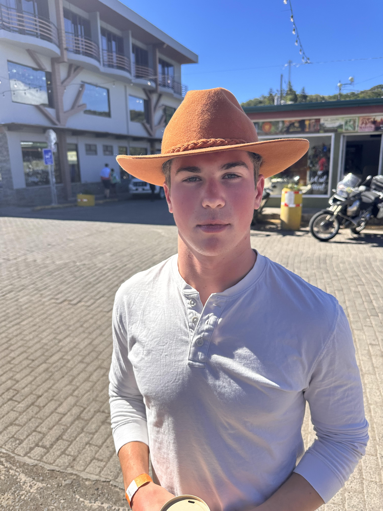

I am a Cognitive Science major with minors in Neuroscience and Mathematics at Carleton College, where I study the vocal-motor system in a singing Central American rodent under the mentorship of Dr. Joel Tripp. Concurrently, I work as a Research Assistant in the lab of Dr. David Herzfeld at University of Wisconsin School of Medicine & Public Health, where I build computational tools to address fundamental questions in neuroscience. As a 2026 National Science Foundation SURE-REU Fellow at UW-Madison College of Engineering, co-advised by Dr. Aaron Suminski in Neurological Surgery and Dr. Herzfeld in Neuroscience, I lead a cross-departmental collaboration aiming to uncover how the cerebellum handles uncertainty in sensory feedback.
I believe that the most important questions in neuroscience live at the intersection of physiology, computation, and behavior. No single level of analysis is sufficient on its own. A behavior without its mechanism is a story without an explanation; a mechanism without its behavior is a solution without a problem. My aim is to work across these levels with maximal rigor, building an integrative understanding to move the field forward. My three fields of study at Carleton are laying that foundation.
I plan to pursue a PhD in Neuroscience or Biomedical Engineering. I am curious about many questions in science. Among them, I hope to understand how our brain learns, generates, and coordinates movements. However, I am generally interested in any body of work that is highly quantifiable and contains important problems to solve. My broader goal is to translate insights from science into real-world applications in Physical Therapy, Rehabilitation, Brain-Computer Interface design, and beyond.